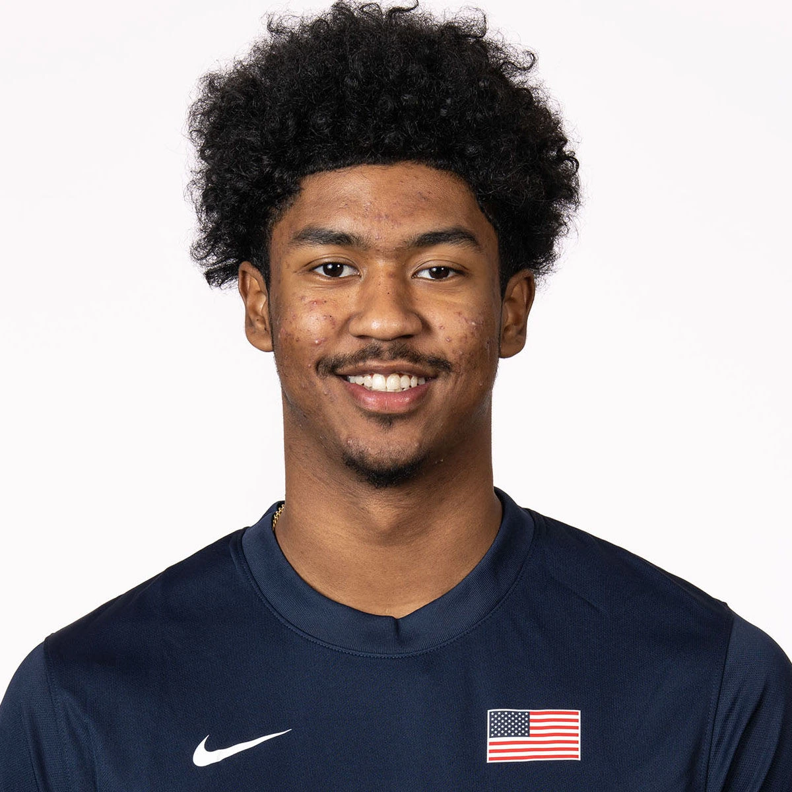

2027 NBA Draft · Preseason Report · Jul 5, 2026
Jason Crowe Jr.
Preseason scouting notes ahead of Missouri's 2026-27 season.

Draft Projection
NBA Role Projection
Stats
No college minutes logged yet — this section fills in once the season tips off.
Info
School: Missouri | Class: FR | Position: PG/SG | Height: 6'3" | Weight: 170 | Wingspan: 6'5"
Physical
He has a thin 6'3" frame and is one of the younger players in the class. He moves well but lacks any standout physical trait at this stage. His body is still immature, though his frame does not appear built to add significant muscle, making strength development an important area to monitor.
Offense
He is one of the most gifted scorers in the high school class. He is extremely comfortable operating from the mid-range, finishes craftily around the basket, and has excellent long-term shooting potential from three.
The biggest question is his playmaking. He has a scorer's mentality and rarely looks to create for teammates. If he wants to reach an All-Star ceiling, developing as a passer and decision-maker will be essential.
Defense
His thin frame, average length, and size for a lead guard create limitations on the defensive end. Much of his defensive outlook will depend on whether he can add strength and consistently compete with high effort. Without improvement in those areas, opponents may target him defensively.
Outlook
Ace Bailey provides an interesting comparison as a pure scorer coming out of high school, but Bailey's 6'9" size gives him much more defensive upside. For Crowe, the path to becoming an NBA star depends on more than scoring. Unless he develops as a playmaker and becomes a more reliable defender, he projects more as an elite sixth-man scorer than a franchise centerpiece.